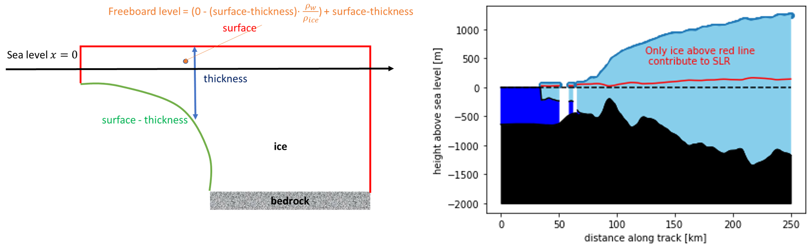

The tip of the iceberg
Aug 31, 2020
Learning objectives. By completing this project, the student will:
- Get experience with structuring and writing a report.
- Be introduced to useful Python libraries for scientific computing.
- Explore numerical round-off and truncation errors.
- Understand basic concepts of isostasy, and apply an existing Python package to study ice melting in the Antarctic.
# Import from standard library:
import pathlib
import random
# Import other stuff:
import matplotlib.pyplot as plt
import numpy as np
import pandas as pd
# Packages needed for the last part? (uncomment to use):
#import cmocean
#import rockhound as rh
#import xarray as xr
Exercise 1
Part 1. Run the following piece of code:
import sys
sys.float_info
Explain in your own words the meaning of the numbers you see printed out.
Show how you can derive the following numbers
yourself: max, min, epsilon.
Part 2. Consider the following code snippets:
a = 1
b = a/30
b *= 30
print('Is a={} equal to b={}?: {}.'.format(a, b, a==b))
Explain the output.
Part 3. Explain why 0.1+0.2 is not equal to 0.3:
a = 0.3
b = 0.1+0.2
print(a==b)
Suggest a better way of testing whether two floating point numbers are equal.
Exercise 2
In this exercise you will get some practice with two extremely useful Python libraries: NumPy and pandas).
We will spend most time with NumPy, learning about various useful operations
you can apply to NumPy arrays (objects of the type ndarray). For scientific
applications it is almost always better to use NumPy arrays than native Python lists.
Part 1.
Run the code below for different values of \( N \):
def draw_random_values_using_for_loop(list_of_values, N):
drawn = []
for i in range(N):
drawn.append(random.choice(list_of_values))
return drawn
def draw_random_values_using_list_comprehension(list_of_values, N):
return [random.choice(list_of_values) for _ in range(N)]
N = 10
M = 3
list_of_numbers = [i+1 for i in range(M)]
%timeit draw_random_values_using_for_loop(list_of_numbers, N)
%timeit draw_random_values_using_list_comprehension(list_of_numbers, N)
%timeit random.choices(list_of_numbers, k=N)
%timeit np.random.choice(list_of_numbers, size=N)
- What does the code do?
- What can you say about the efficiency of the three functions? Experiment with different values of \( N \) and \( M \).
Below are some frequently useful NumPy commands:
index = np.arange(1000)
array_of_zeros = np.zeros(20)
array_of_ones = np.ones(20)
evenly_spaced_numbers = np.linspace(0, 10, 11)
evenly_spaced_numbers2 = np.linspace(0, 10, 11, endpoint=False)
- Explain each of the above commands.
- How would you go about doing the same things with native Python lists?
Lists are easily converted into Numpy arrays, e.g.:
example_array = np.array([1, 1, 2, 3, 5, 8, 13, 21, 34])
Some other useful commands are exemplified below:
idx_of_ones = np.where(example_array == 1)
print(example_array[idx_of_ones])
is_equal_to_eight = (example_array == 8)
print(example_array[is_equal_to_eight])
new_example_array = np.where(example_array == 1, example_array, 0)
random_mdim = np.random.randint(100, size=(5,5))
nnz = np.count_nonzero(random_mdim)
- Explain what each line of code does.
- How can we explain what happens in the code below?
vector = np.array([1, 2, 3, 4, 5])
result = 2*vector
print(result)
(This "trick" is extremely useful when doing numerical calculations!)
Part 5.
The text file riccioli.dat contains data [1] for
experiments in which a clay ball was dropped from a high tower, and
subsequently experienced free fall.
For each recorded time, the estimated distance traveled has been reported
in units of Roman feet \footnote{These are very old measurements....}.
- Read the data into a Pandas data frame object (tip: use the function
pd.read_csv). - Make a scatter plot in which you distinguish between the different experiments with different markers and/or colors.
Figure 1: Giovanni Riccioli's data on free fall.

Exercise 3
In this exercise we are going to model a very simple physical system, and use it to study numerical errors when solving the system in an approximate way.
Consider a heavy object moving either up or down in a constant gravitational field. Since there is no horizontal displacement, Newton's law of motion yields \( F=ma=-mg \), so that $$ \begin{equation} \frac{d^2x(t)}{dt^2}=-g\,, \tag{1} \end{equation} $$ where \( x=x(t)\geq{0} \) is the height of the object above the ground at time \( t \). The exact solution to this equation is $$ \begin{equation} x(t)=x_0-v_0 t-\frac{1}{2}gt^2\,, \tag{2} \end{equation} $$ where \( v_{0} \) is the downwards velocity of the object at \( t=0 \). With this sign convention, a negative \( v_0 \) would mean that the initial velocity is upwards.
Part 1. Write a Python function that returns the analytical solution, equation (2), for any values of \( t \), \( x_0 \), \( v_0 \), and \( g \).
The remaining three input arguments are optional, and they should be given the following default values: \( x_0=10.0 \), \( v_0=0.0 \), and \( g=9.81 \).
You should also get into the habit of providing Python Docstrings for your functions, classes, etc.
The code below exemplifies how you may start defining your function (including writing a Docstring):
def height_above_ground(t, x0=10.0, v0=0.0, g=9.81):
"""
Calculates the height above ground of an object experiencing
vertical motion in a constant gravitational field.
:param t: Time in seconds. Can be a single number, or an array.
:param x0: Initial height of the object (default: 10.0 m).
:param v0: Velocity at time zero (>0 for downward direction)
(default: 0 m/s).
:param g: Gravitational constant (default: 9.81 m/s^2).
:return: The height above ground at time(s) t (m).
"""
return # insert the actual code here
When using default input parameters, the function can be called by simply
typing height_above_ground(t). On the other hand, if you want to use a
non-zero initial velocity you can write, e.g., height_above_ground(t, v0=1.0).
Part 2.
Next, we are going to solve equation (1) using a simple numerical scheme. From Taylor's polynomial formula it is possible to derive: $$ \begin{equation} \frac{d^2x(t)}{dt^2}=\frac{x(t+h)+x(t-h)-2\cdot x(t)}{h^2} +\frac{h^2}{12} x^{(4)}(\eta)\,, \tag{3} \end{equation} $$ where \( \eta \) is some number in the interval from \( t-h \) to \( t+h \). Inserting this equation into (1) yields: $$ \begin{align} x(t+h) = 2\cdot x(t) - x(t-h) -g h^2 - \frac{h^4}{12} x^{(4)}(\eta)\,. \tag{4} \end{align} $$ By neglecting the last term, and introducing the short-hand notation \( x_n \) for the numerical approximation at time \( t_n\equiv n\cdot h \), we might therefore suggest the following numerical scheme: $$ \begin{align} x_{n+1} =2x_n - x_{n-1} - g h^2\,. \tag{5} \end{align} $$
A challenge with using formula (5) to compute the height of the object at a given time step is that we need to know where the object was at the two previous time steps. However, we are only given the height at time zero! The solution to this problem is to recognize that we have really specified two initial conditions, one for position and one for velocity. Since we know the initial velocity \( v_0 \), we can use it to estimate the height at the end of the first time step. For now, we will assume: $$ \begin{align} x_{1} = x(t=h) \approx x_0 - v_{0}h \,. \tag{6} \end{align} $$
Subsequent points \( x_2, x_3, \ldots \) can now be found by repeatedly applying equation (5).
- Write a Python function that implements the above algorithm. Use a constant step size \( h \), and terminate the algorithm once a pre-specified time \( t_f \) has been reached (or would be surpassed if taking one more time step).
- The function should return a tuple of arrays, \( (t, x(t)) \), see the code snippet below.
def height_above_ground_numerical(t_f, h, x0=10.0, v0=0.0, g=9.81):
"""
INSERT SOME MORE CODE DOCUMENTATION HERE....
:param t_f: Maximum simulation time (seconds).
:param h: Constant time step (seconds).
:param x0: Initial height of the object (default: 10.0 m).
:param v0: Velocity at time zero (>0 for downward direction)
(default: 0 m/s).
:param g: Gravitational constant (default: 9.81 m/s^2).
:return: A tuple of arrays (t, x(t)) containing the numerical
solution at times 0, h, 2*h, 3*h, ..., N*h <= t_f.
"""
# Create local variables and do calculations here...
return t_array, x_array
You may use this code as a starting point for your own implementation.
Part 3.
Let \( x_0=10.0 \), \( v_0=0.0 \), and \( g=9.81 \).
- Apply your previous function to the case \( t_f=1.4 \).
- For each of the constant step-sizes \( h=0.1, 0.01, 0.001 \), do the following: Compare your numerical solution (scatter plot) to the analytical solution (a solid line). Comment on the results.
Figure 2: Illustration of the difference between global and local numerical error.

We now want to study the global numerical error at the end of the last time step, \( t=t_N \leq t_f \) (the exact time will be the integer part of \( t_f/h \)). To save computational time, we now choose \( t_f=0.1 \) seconds.
- Write a Python function takes as input an array of step sizes, and returns an array containing global errors at the specific time \( t=t_N \). The function should be able to return both absolute and relative errors, depending on user input.
- Compare the error for \( h=5\cdot10^{-7}, 10^{-6}, 5\cdot10^{-6}, 10^{-5}, 10^{-4}, 10^{-3}, 10^{-2} \). Plot both the absolute and relative error versus \( h \). Discuss the difference between the two curves.
- Explain the shape of the relative numerical error curve. Pay special attention to the slopes. Are they what you expect?
The global error in Part 4 is of much lower order than \( \mathcal{O}(h^3) \), which one might naively expect\footnote{Frequently, if the local truncation error is \( \mathcal{O}(h^{p+1}) \), the global error is \( \mathcal{O}(h^p) \)} should be the case from equation (4). How can this be? To understand this we need to go back to our approximation of the velocity term, equation (6). From the requirement that $$ \begin{equation} \left.\frac{dx}{dt}\right|_{x=0} = -v_0\,, \tag{7} \end{equation} $$ we have implicitly used Taylor's formula to replace the derivative at \( t=0 \) with $$ \begin{align} \left.\frac{dx}{dt}\right|_{x=0} &= \frac{x_1-x_0}{h} - \frac{h}{2} x^{\prime\prime}(\xi) = -v_0 \,, \nonumber \\ &\Longrightarrow x_1 = x_0 - h\cdot v_0 + \frac{h^2}{2}x^{\prime\prime}(\xi) \,, \tag{8} \end{align} $$ for some \( \xi \) in \( [0, h] \). We now see that our implementation introduces a local truncation error of order \( \mathcal{O}(h^2) \).
Can we do better? Again, let us naively go ahead and apply the centered difference formula $$ \begin{align} \left.\frac{dx}{dt}\right|_{x=0} &= \frac{x_1 - x_{-1}}{2h} - \frac{h^2}{6}x^{(3)}(\xi) = -v_0 \,, \no \tag{9}\\ &\Longrightarrow x_{-1} = x_1 + 2hv_0 - \frac{h^3}{3}x^{(3)}(\xi) \,. \tag{10} \end{align} $$ The point \( x_{-1} \) has not been defined, but equation (5) with \( n=0 \) leads to the requirement \( x_{-1} = 2\cdot x_0-x_1-gh^2 \), so that we can eliminate \( x_{-1} \) from equation (10) to find $$ \begin{align} x_{1} &= x_0 - h\cdot v_0 - \frac{1}{2}gh^2 - \frac{h^3}{6} x^{(3)}(\xi) \nonumber \\ &= x_0 - h\cdot v_0 - \frac{1}{2}gh^2 + \mathcal{O}(h^3)\,. \tag{11} \end{align} $$
- Repeat the simulations you did in Part 4, except that now you use \( x_1 \) from equation (11) to initialize the model (ignore the last term).
- Again, plot the curve showing the global relative error at the final simulation time as a function of \( h \).
- What do you see this time? Are the results consistent with what you expect from equation (11)? Why / why not?
Part 6 (OPTIONAL).
Consider again the data you read from the text file riccioli.dat.
- First, assume that the measurements were extremely accurate. Under this interpretation, approximately how many Roman feet is in a meter? (Hint: Adapt and then fit your analytical model to the data, either manually or with an automatic curve-fitting routine, e.g. curve_fit)
- The last of the three experiments was conducted by dropping balls from the Asinelli Tower. According to the experimenter Giovanni Riccioli (1598-1671), the height of the tower back then was 312 Roman feet. Modern measurements say it is 98.37 m high. Assuming both of these values to be correct, what you say about the accuracy of Riccioli's measurements?
- Can you think of ways to improve the current model?
Exercise 4
Most of the ice on Earth is located in the Antarctic. In recent years there has been a great deal of activity to map the ice and the bedrock of Antarctica. Most of these data are freely available, and we can use them to investigate different scenarios. For instance, one natural question to ask is the following: if all the ice melts, how much does the sea level increase (SLR)?
To calculate the sea level rise, we need to know not only how thick the ice is, but also the elevation above the bedrock. In this exercise you will see how we can use Python together with available data and libraries made by others to do quite advanced calculations.
Let us start by deriving a result that you may have seen before. We shall consider an iceberg that is floating and which is not impacted by any other forces than gravity (figure 3). The Archimedean principle tells us that buoyancy is proportional to the mass of displaced water, hence Newton's 2nd law yields $$ \begin{equation} \tag{12} m_\text{ice}\,g-\rho_{seawater}V_{\text{H$_2$O}}^\text{disp}\,g=0, \end{equation} $$
where \( \rho \) is the density (mass divided by volume), and \( g \) the gravitational constant.
Figure 3: A schematic illustration of an iceberg. \( V_{\mathrm{H_{2}O}}^{\mathrm{disp}} \) is the volume of water displaced by the iceberg.

As the ice melts it must end up as an equal mass of water: $$ \rho_\text{ice}V_\text{ice}=m_\text{ice} =m_\text{ice water}=\rho_\text{ice water}V_\text{ice water}\,. $$
By inserting the right-most expression for the mass of ice into equation (12), and dividing by \( g \), we get: $$ \begin{equation} \tag{13} V_{\text{H$_2$O}}^\text{disp}=\frac{\rho_\text{ice water}}{\rho_{seawater}}V_\text{ice water}. \end{equation} $$
Therefore, the net contribution to sea level rise can be captured by $$ \begin{equation} \Delta{V}\equiv V_\text{ice water}-V_{\text{H$_2$O}}^\text{disp}= \left(1-\frac{\rho_\text{ice water}}{\rho_{seawater}}\right)V_\text{ice water}. \tag{14} \end{equation} $$
It follows that if we assume the iceberg has the same density as seawater, then there is no contribution from a floating iceberg to sea level rise. On the other hand, if the density of ice is lower than that of seawater, there is a contribution.
Part 1 (OPTIONAL). The North Pole consists of ice floating in the sea. A rough estimate is that it contains 15$\cdot 10^3$ km$^3$ of ice. Calculate the net volume of water these icebergs would contribute to the oceans if we can assume that seawater has an average density of 1030 \( \mathrm{kg/m^3} \), ice has a density of 917 \( \mathrm{kg/m^3} \), and that melted ice (ice water) has a density of 1000 \( \mathrm{kg/m^3} \).
Part 2 (OPTIONAL). The earth radius is about 6371 km, and we will assume that it is a sphere and therefore has a surface area of \( R=4\pi R^2 \). About 71$\%$ of the earth is covered by water. If the volume of melted water is distributed evenly across the earth surface, how much sea level rise would the melted North Pole ice contribute with?
Part 3. Next, we will work with the bedmap2 dataset [2] for Antarctica (the South Pole). We shall use the rockhound library to load in and visualize the data. As an aid to the plotting, we will also employ color maps from the cmocean library [3]. Therefore, you should start by making sure that you have both cmocean and rockhound installed to the Python kernel that you use in your Jupyter notebook. Once both packages are installed, do the following:
- Run the following code (from the rockhound library documentation), and reproduce figure 4.
bedmap = rh.fetch_bedmap2(datasets=["thickness","surface","bed"])
plt.figure(figsize=(8, 7))
ax = plt.subplot(111)
bedmap.surface.plot.pcolormesh(ax=ax,cmap=cmocean.cm.ice,
cbar_kwargs=dict(pad=0.01, aspect=30))
plt.title("Bedmap2 Antarctica")
plt.tight_layout()
plt.show()
Figure 4: Visualization of the ice thickness in Antarctica.

This may take quite some time, so it is recommended to not run the cell generating the plot more often than you have to.
Part 4.
As in the North Pole example, much of the ice above the sea level cannot contribute to sea level rise. The height above the seawater at which an iceberg floats is called the freeboard. Ignoring salinity effects, the volume of ice needed to replace an equivalent volume of seawater is $$ \begin{equation} \tag{15} V_\text{ice}=V_w\frac{\rho_w}{\rho_\text{ice}}\,. \end{equation} $$
All the blocks in the data set are of equal size, we can convert the volume to an ice thickness: $$ \begin{equation} \tag{16} h_\text{ice}=h_w\frac{\rho_w}{\rho_\text{ice}}\,. \end{equation} $$
The Thwaites glacier, named after Fredrik T. Thwaites, is of particular interest. Also referred to as the Doomsday glacier, it is a fast moving glacier (up to 4 km/year) at the coast of Antarctica, roughly 120 km wide. It is called the Doomsday glacier because it is believed that it may trigger a collapse of west Antarctica. For now we can use the bedmap2 dataset to view a cross section of the glacier, \( y=-0.5\cdot10^{6} \) and \( x\in[-1.6\cdot10^6,-1.35\cdot 10^6] \):
# Extract cross section using the original coordinates
bed1d=bedmap.sel(y=-0.5e6, x=slice(-1.6e6,-1.35e6))
# Add a second x-coordinate to make prettier plots
# (shift x-axis to start at zero, and convert from m to km)
bed1d=bed1d.assign_coords({"x2":((bed1d.x+1.6e6)/1e3)})
It is now possible to plot the values in the bed1d data array by simply
typing
bed1d.surface.plot(x='x2')
When making customized plots it is often best to use the matplotlib.pyplot
module manually \footnote{In the above code, matplotlib is used under the hood.}.
Then we probably need to extract the underlying NumPy arrays containing the
data we are interested in. For example, the command
surface=bed1d['surface'].values can be used to extract an array containing
the surface elevation values.
- Use the equation to the left in figure 5 to calculate the freeboard level.
- Make a cross section plot of the ice thickness, bed rock, and freeboard level, similar to (the right) figure (5)
- Explain what you see. Is the shape of the bedrock important for sea level rise?
Figure 5: (left) How to calculate the freeboard level. (right) Cross section plot of Thwaites glacier.

Part 5. Finally, we are going to use the whole bedmap data set to calculate the sea level rise (SLR) if all the ice of Antarctica melted.
- Estimate the height of ice that can contribute to SLR for all the cells in the data set. Multiply the height with the area of each cell (\( 1000\times1000 \) meters) in order to estimate the volume of ice.
- Assume that this volume is distributed evenly over the earth surface. What is then height of the SLR?
Guidelines for project submission
The project has to be handed in as a notebook, though you can submit an additional PDF if you want. You should bear the following points in mind when working on the project:- Start your notebook by providing a short introduction in which you outline the nature of the problem(s) to be investigated.
- End your notebook with a brief summary of what you feel you learned from the project (if anything). Also, if you have any general comments or suggestions for what could be improved in future assignments, this is the place to do it.
- All code that you make use of should be present in the notebook, and it should ideally execute without any errors (especially run-time errors). If you are not able to fix everything before the deadline, you should give your best understanding of what is not working, and how you might go about fixing it.
- Functions that you code should be reusable, never copy and paste code. Copy and paste is a strong indication that you instead should define function.
- If you use an algorithm that is not fully described in the assignment text, you should try to explain it in your own words. This also applies if the method is described elsewhere in the course material.
- In some cases it may suffice to explain your work via comments in the code itself, but other times you might want to include a more elaborate explanation in terms of, e.g., mathematics and/or pseudocode.
- In general, it is a good habit to comment your code (though it can be overdone).
- When working with approximate solutions to equations, it is always useful to check your results against known exact (analytical) solutions, should they be available.
- It is also a good test of a model implementation to study what happens at known 'edge cases'.
- Any figures you include should be easily understandable. You should label axes appropriately, and depending on the problem, include other legends etc. Also, you should discuss your figures in the main text.
- It is always good if you can reflect a little bit around why you see what you see.
Bibliography
- C. M. Graney. Anatomy of a Fall: Giovanni Battista Riccioli and the Story of G, Phys. Today, 65(9), pp. 36, 2012.
- P. Fretwell, H. D. Pritchard, D. G. Vaughan, J. L. Bamber, N. E. Barrand, R. Bell, C. Bianchi, R. Bingham, D. D. Blankenship and G. Casassa. Bedmap2: Improved Ice Bed, Surface and Thickness Datasets for Antarctica, The Cryosphere, 7(1), pp. 375-393, 2013.
- K. M. Thyng, C. A. Greene, R. D. Hetland, H. M. Zimmerle and S. F. DiMarco. True Colors of Oceanography: Guidelines for Effective and Accurate Colormap Selection, Oceanography, 29(3), pp. 9-13, 2016.